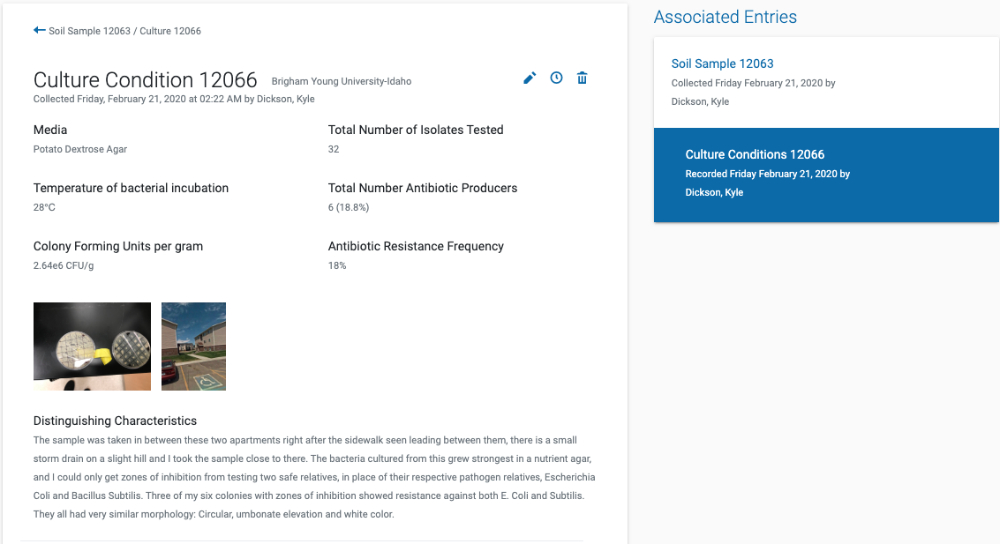
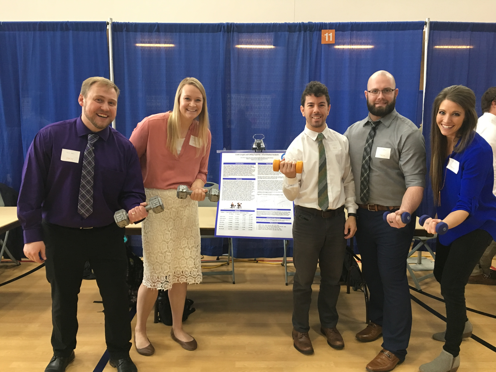
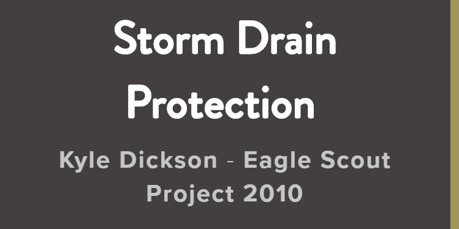

I was born and raised in a little town south of Seattle called Bonney Lake. I have loved calling it my home all my life, it was a wonderful place that afforded me a childhood surrounded by the natural beauty of mountains, deep forests, rain, and green ocean shores. Growing up I faced several physical ailments that made life difficult at times including asthma and eczema. Those health complications were blessings in disguise as they helped me at an early age to appreciate and have a passion for the pursuit of better health for myself and others. At age 19, I chose to serve as a full-time missionary for the Church of Jesus Christ of Latter-Day Saints and my assignment was Antananarivo, Madagascar. Life was hard at times in a developing country. I saw some very hard things and gained a deep appreciation for my privileged life here in America. Through my experience in that country I gained a rare insight into another culture and in return I felt I left a part of myself there forever with the Malagasy people when I came home. I had the opportunity to pursue an education in the exercise sciences at Brigham Young University Idaho from 2015 to 2019 and attained my Bachelor of Science in Exercise Physiology in April 2019.

I married my Arizona sweetheart Brooklynn on August 10th, 2019. We met as students at Brigham Young University Idaho where we took a Sports Nutrition Course together. Later on we were interns at the campus's Wellness Center where she worked as a trainer for the University Gym and I was a Nutrition Coach. We fell in love over the many similarities we shared with our future health career interests and also because we both had the same goofy sense of humor. I knew very quickly she was the one for me. Currently we still reside in Rexburg, Idaho until I start school as a graduate wherever I get accepted. Brooklynn is the leasing manager for a student apartment complex and I will soon be taking my NREMT to become a certified EMT to find work that I need for medical patient hours for Grad School.
Brigham Young University's Wellness Center is where I fulfilled my mandatory Internship hours for graduation. I had the wonderful chance to be a Nutrition Coach, and to meet with students who dealt with a variety of issues and needed dieting advice specific to their needs. I met with body builders, students with eating disorders, campus faculty, and lots of people who just had a general interest in how to make better food prep/buying decisions. My responsibilities also included taking patient vitals, performing blood lipid profile tests, and working the In-Body machine that gave a detailed analysis of a person's body composition. Later on I would also work as the Lead Wellness Coach where I oversaw all the work and progress of the Nutrition Coach Interns in the Wellness Center. I planned projects, led workshops, helped each intern meet their internship program requirements, and worked to expand and refine the nutrition material we taught at the center to students.

As I mentioned before me and my wife Brooklynn worked together at the University's Wellness center. This is the day I graduated, and little did she know at the time but several hours after this picture was taken I proposed to her!
I am currently in the process of completing my NREMT exam. I completed my training with the Madison Fire department of Madison County, Idaho on 12/11/2019.
Tiny Earth project involves the efforts of both professors and students alike. Its goal is to research soil samples gathered by individuals in local areas where they reside. The samples are tested for possible antibiotic properties. This is done by culturing the bacteria found in the soil by first finding which nutrient/agar type works best to sustain viable bacteria colonies. Once this is done then safe relatives of pathogens are introduced. After an incubation period the petri dishes are then observed for any "zones of inhibition" around the bacteria colonies which might indicate they are producing antibiotics against the tested safe relatives. In my research I cultured in nutrient agar several bacteria colonies that showed zones of inhibition against Bacillus Subtilis, and Escherichia Coli which is the safe relative of the pathogen Klebsiella Pneumoniae. This, as the name implies, is the bacteria involved in the development of pneumonia. So in conclusion it is possible that during my several months of lab research I cultured bacteria that develops antibiotics against the pneumonia causing bacteria.

For my "Biomechanics of Sports & Exercise" class, I participated in the Research & Creative Works Conference held by the university. My group's project focused on testing the difference between limb length and force production during exercise. We took participants who had strength training and performed a protocol for a 1-rep max test for a preacher curl test after measuring arm length to see if there were any correlations with arm length and the amount of force it was able to produce.
| Course Code | Course Description | Grade |
|---|---|---|
| PSYCH 111 | General Psychology | B+ |
| ESS 375 | Exercise Physiology | A |
| ESS 375L | Exercise Physiology Lab | A |
| BIO 180 | Introduction to Biology I | B+ |
| BIO 265 | Human Anatomy & Physiology II | A- |
| BIO 265L | Human Anat & Physiology II Lab | A- |
| BIO 221 | General Microbiology | B |
| ESS 465 | Advanced Exercise Physiology | B+ |
| HS 349 | Sports Medicine | A- |
| NUTR 200 | Nutrient Metabolism | A |
| NUTR 350 | Sports Nutrition | B |
| ESS 498 | Internship | A |
| PH 105 | Introductory Applied Physics I | B- |
| HRHP 359 | Intro to Kines & Biomechanics | B- |
| HRHP 415 | Biomechanics of Sport & Exercise | B |
| HS 370 | Epidemiology | A- |
| NUTR 330 | Nutrition in the Life Cycle | B |
| HS 280 | Medical Terminology | A |
| CHEM 351 | Organic Chemistry I | C+ |
| CHEM 351L | Organic Chemistry Lab I | B |
In 2017 I planned to get a BSN and took the HESI exam for the nursing program. I scored a 90% but later I decided to pursue another career path.

Click picture to check out my Mission web page
I served as a full-time service representative for The Church of Jesus Christ of Latter-Day Saints in Madagascar from 2012-2014.
Click picture to check out my Eagle Project web page
During the summer of 2010 I finished my Eagle Scout Project. I partnered with the Pierce Conservation District, WA.
In July 2016 I was awarded a $3,000 Scholarship from the Boeing Employees' Credit Union. The scholarship is awarded on merit of significant service given to the community. I spent a large amount of my time as a missionary in Madagascar doing service projects such as painting schools, working in rice fields, digging sides of roads, and holding free weekly English classes. Because of that service the BECU Foundation chose me and a group of several students for our passion in helping others.
In September 2010 I completed my final requirement for receiving my Eagle Scout Status and award. It was huge service project that required several previous summer months of planning. I worked with the Pierce Conservation District to spread awareness for storm drain pollution. With government workers I helped map out an area that consisted of over 400 storm drains that needed to be marked and through the planning process was able to choose how and when we would get the job done. On the final day of my project I coordinated a team of at least 12 individuals to hit every drain that we had planned. It was the conclusion to 6 years of hard work. During my time as a Boy Scout I learned a variety of skills I still use to this day. The Boy Scouts of America taught me many valuable life lessons and the importance of integrity and giving your best always.